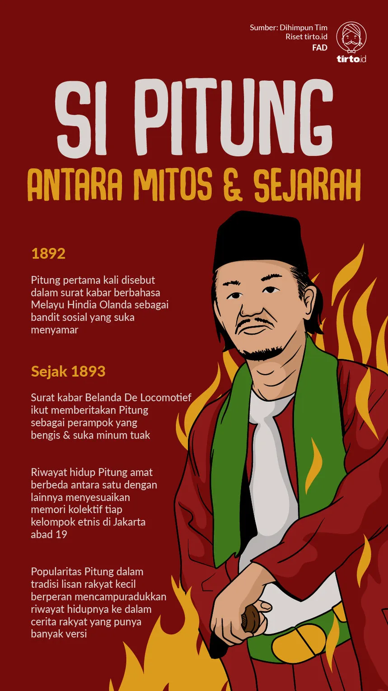

Cerita Rakyat
Cerita rakyat yang berkembang di Jakarta selain cerita rakyat yang sudah dikenal seperti Si Pitung, juga dikenal cerita rakyat lain seperti serial Jagoan Tulen atau Si Jampang yang mengisahkan jawara-jawara Betawi baik dalam perjuangan maupun kehidupannya yang dikenal "keras". Selain mengisahkan jawara atau pendekar dunia persilatan, juga dikenal cerita Nyai Dasima yang menggambarkan kehidupan zaman kolonial. Cerita lainnya ialah Mirah dari Marunda, Murtado Macan Kemayoran, Juragan Boing dan yang lainnya.
| No. | Nama Cerita | Penjelasan |
|---|---|---|
| 1. | Si Pitung  |
Riwayat Hidup
Si Pitung lahir pada tahun 1866 di kampung Pengumben, sebuah permukiman kumuh di Rawabelong, dekat Stasiun Palmerah
sekarang ini. Putra keempat pasangan Bang Piung dan Mbak Pinah ini bernama asli Salihoen. Menurut riwayat lisan,
julukan "Si Pitung" berasal dari frasa Jawa "pituan pitulung" yang berarti "tujuh sekawan tolong-menolong". Semasa
kanak-kanak, Salihoen berguru di pesantren Hadji Naipin, tempat ia diajari mengaji, dilatih pencak silat, dan
dibiasakan untuk selalu waspada terhadap keadaan di sekitarnya. Awal Legenda
Si Pitung, seorang penjahat menurut versi Van Till (1996), bermula ketika kambing yang dijualnya dicuri oleh para
pencuri Rais, Jiih, dan Jampang, yang bekerja sebagai "centeng" untuk tuan tanah. Meskipun dirampok, Si Pitung tetap
tenang. Ayahnya marah dan memerintahkan Si Pitung mencari kembali uang tersebut. Si Pitung menemukannya, tetapi dia
diajak para pencuri untuk bergabung. Awalnya menolak, Pitung akhirnya bergabung dengan mereka. |
| 2. | Si Jampang |
Riwayat Hidup
Si Jampang berasal dari suku Betawi dan dikenal sebagai seorang anak yatim piatu. Meskipun masa kecilnya penuh
kesulitan, Si Jampang tumbuh menjadi pemuda yang tangguh dan berkepribadian kuat. Selama masa muda, Si Jampang
mendalami ilmu bela diri, terutama ilmu silat. Ia menjadi ahli dalam seni bela diri Betawi dan mengasah
keterampilannya untuk melindungi dirinya sendiri serta memberikan perlindungan kepada masyarakat yang lemah.
Si Jampang memulai perjuangannya melawan ketidakadilan dan penindasan yang dilakukan oleh para penjahat dan
kaum bangsawan. Ia menjadi pahlawan rakyat yang memberontak terhadap sistem yang tidak adil. Si Jampang mengabdikan
hidupnya untuk melindungi masyarakat Betawi. Ia sering kali membela kaum miskin dan memberikan keadilan kepada
mereka yang dianiaya oleh kekuatan yang lebih besar. Legenda
Kisah legenda Si Jampang seringkali berkisah tentang pemberontakan dan perlawanannya terhadap penindasan yang
dilakukan oleh kelompok-kelompok penjahat atau kaum bangsawan yang sewenang-wenang. Dalam beberapa versi legenda,
Si Jampang juga terlibat dalam kisah cinta dan pengorbanan. Ia mungkin harus menghadapi rintangan dan pengkhianatan
untuk melindungi orang yang dicintainya. Kisah legenda Si Jampang tidak hanya menjadi bagian dari warisan budaya
suku Betawi, tetapi juga terus diwariskan melalui tradisi lisan, seni pertunjukan, dan karya seni lainnya.
Legenda ini mencerminkan nilai-nilai keberanian, keadilan, dan perlawanan terhadap ketidakadilan yang tetap relevan
dalam budaya Betawi. |
| 3. | Nyai Dasima |
LegendaNjai Dasima merujuk pada nama tokoh novel Tjerita Njai Dasima karya G. Francis tahun 1896. Seorang nyai Belanda yang kisah tragisnya sangat legendaris di Batavia. Ia berasal dari Bogor, hidup antara tahun 1805-1830. Perempuan cantik ini merupakan nyai (atau istri peliharaan) Tuan Edward, orang Inggris yang tinggal di Pejambon. Hubungan mereka membuat Dasima putus hubungan dengan pihak keluarganya, yang menganggap Dasima telah murtad karena kawin dengan Edward. Keluarga dan bangsanya menganggapnya amoral, tidak bermartabat.Sebaliknya di kalangan Eropa tidak sepenuhnya mau menerimanya dan membuatnya sebagai bahan hinaan, apalagi Edward temyata hanya membutuhkan tubuhnya saja. Kedua keadaan ini telah membuat Dasima kehilangan pegangan hidup, kemudian datanglah Samiun sang juru selamat hidupnya. Pemuda Kwitang ini akhirnya berhasil menggaet Dasima. Ternyata Samiun datang hanya untuk menguasai harta Dasima, menguasainya untuk membayar utangnya yang menumpuk di tukang gadai. Dasima yang lari dari tuan Edward ke pelukan Samiun untuk mencari perlindungan dan cinta, temyata justru tertipu dan mendapat kemalangan. Ujung hidup Nyai Dasima berakhir tragis dan mati di Kali Cempaka Putih, dirampok suaminya sendiri dengan dibantu jawara Tanah Tinggi, Bang Puasa. Kisah tragis ini kemudian dibukukan oleh penulis belanda, G. Francis. |